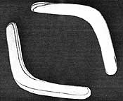

The different grain patterns on this homemade boomerang show where wood should be sanded away in order to shape the airfoil for graceful flight. This particular model measures 12 inches from tip to tip, and is made of strong, 3/8"" aircraft-grade plywood